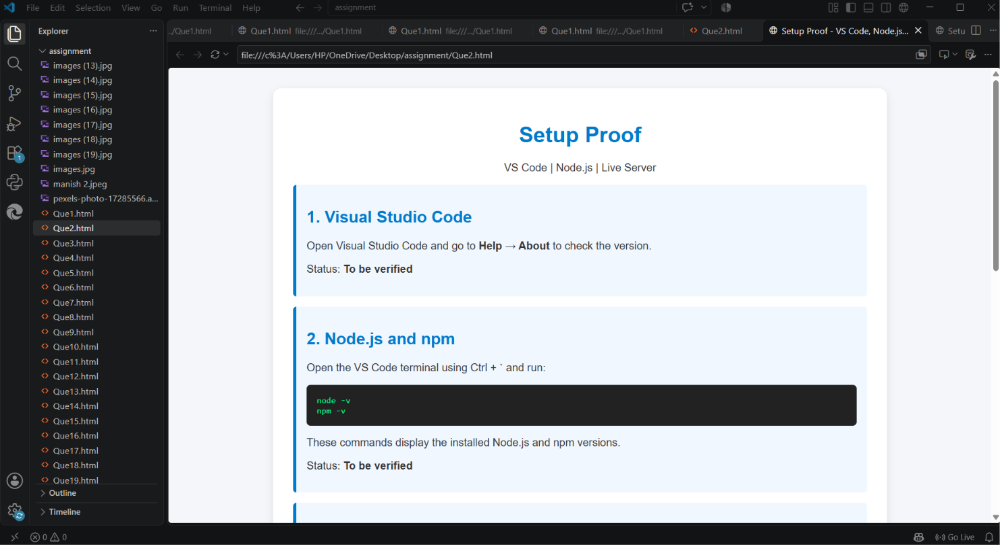

VS Code | Node.js | Live Server
Open Visual Studio Code and go to Help → About to check the version.
Status: To be verified
Open the VS Code terminal using Ctrl + ` and run:
node -v npm -v
These commands display the installed Node.js and npm versions.
Status: To be verified
Press Ctrl + Shift + X, search for Live Server by Ritwick Dey, and install the extension.
Open an HTML file and click Go Live in the VS Code status bar.
Status: To be verified
The browser should open your local webpage at an address similar to:
http://127.0.0.1:5500/
Status: To be verified
Save your actual screenshot at:
screenshots/setup-proof.png
The screenshot should show VS Code, terminal output, the Live Server extension, and the browser.
